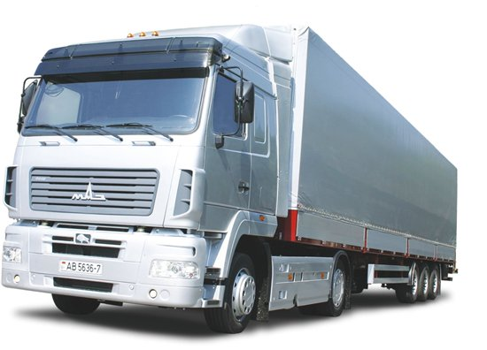
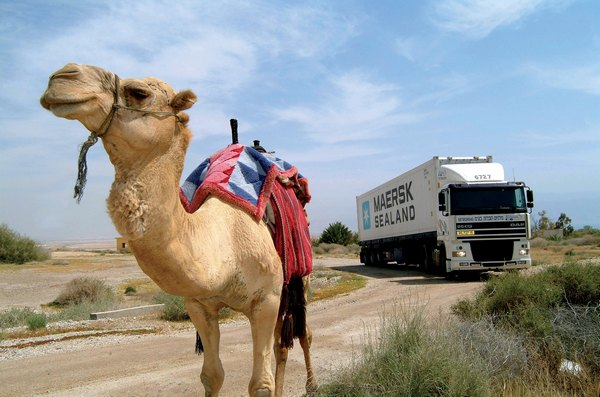

Генеральная задача, стоящая перед нашим транспортным предприятием, — это изучение, систематизация, анализ и, наконец, качественное удовлетворение потребностей логистических услуг. И главный вид деятельности нашего предприятия – это транспортные и складские услуги. Что такое современные транспортные услуги? Транспортные услуги – это симбиоз цены и качества. Транспортные услуги обладают своеобразной спецификой, которая определяется не только условиями рынка и экономикой страны, но также целиком и полностью зависит от маркетинговой политики фирмы – владелицы транспорта.
До последнего времени большая часть транспортных компаний занимались в основном перевозочными операциями, не принимая во внимание иные транспортные услуги. Это объяснялось очень просто. В стране господствовала административно-контрольная система, при которой совершенно отсутствовали конкуренция и рыночные отношения.
И
в то же время говорить, что транспортные
услуги сосредоточены
только в перевозках, — это очень грубая
ошибка. Товар, груз не просто должен
дойти до получателя, он не просто должен
находиться в пути минимальное время,
но и все процессы оформления и
переоформления перевозки должны быть
максимально удобны и также не быть
длительными. А это требует применения
всех новейших технологий выполнения
работ каким-либо образом связанных с
перевозками.
Возникновение новых экономических отношений расширило смысл понятия «транспортные услуги». Сегодня транспортные услуги – это не только перевозки грузов. Транспортные услуги – это любая операция, которая хоть и не входит в состав традиционного процесса перевозки, но целиком и полностью связана с подготовкой и проведением последнего.

Сегодня транспортные услуги включают:
Непосредственно перевозку грузов: Внутригородские, Междугородние, перевозки сборным грузом, авиаперевозки.
Все работы по погрузке-разгрузке: услуги грузчиков, услуги такелажников.
Складские услуги: хранение грузов, кросс-докинг.
Обслуживание и подготовку всех средств перевозки;
Предоставление средств перевозки в аренду или напрокат;
Подачу отремонтированных или новых средств транспорта;
Все экспедиционные и транспортные услуги;
Некоторые транспортные услуги другого вида.
Несомненно, транспортные услуги в значительной степени и сегодня воплощаются в жизнь в виде разного рода перевозок грузов. Причем перевозки, как правило, сопровождаются погрузкой-разгрузкой, экспедиционными услугами и прочее, и прочее. Очень часто в транспортные услуги включаются коммерческие, маркетинговые, услуги страхования и другие.
При попытке классифицировать транспортные услуги, можно столкнуться с множественностью критериев, на которых будет основана классификация. При классификации по признаку основной деятельности компании транспортные услуги бывают перевозочные, т.е. в том либо в другом виде в услуги включаются перевозки, и не перевозочные. Если во главу угла ставить потребителя, которому предоставлены транспортные услуги, то можно выделить внешние, которые предоставлены предприятием без транспорта, и внутренние, когда транспортные услуги предоставляются другим транспортным предприятием. Классифицируя транспортные услуги по характеру деятельности, которая связана непосредственно с предоставлением определенного вида услуг, можно разделить транспортные услуги на информационные, коммерческие, технологические и т.д.
Можно выделить целый ряд характеристик понятия «транспортные услуги»:
Транспортные услуги не существуют вне процесса их предоставления, они не в состоянии накапливаться;
Продажа услуг заключена в фактической продаже трудового процесса, и, соответственно, качество услуг определено степенью качества труда;
Транспортные услуги представляют потребительскую стоимость лишь в определенном месте и направлении и в конкретный интервал времени, что делает значительно ограниченной возможность их замены на рынке услуг;
Транспортные услуги – это услуги, предваряющие или завершающие процесс материального производства;
Транспортные услуги обладают несомненным свойством уникальности для потребителя;
Услуга, осуществленная, не может быть повторена;
И некоторые другие
Транспортные
услуги, как и многие другие, должны быть
реализованы так, чтобы с минимальными
затратами были удовлетворены все
требования заказчика. Но особенности
такого вида деятельности, как транспортные
услуги, заключаются именно в том, что
на сегодняшний день не существует
достаточно эффективных количественных
методов для объективной оценки их
качества. Качество перевозок определяется
совокупностью показателей, определяющих
их способность удовлетворить потребности
грузополучателей или грузоотправителей.
Чтобы повысить качество перевозок, компания должна периодически проверять все транспортные услуги на степень удовлетворения потребителя. Как правило, применяется метод анкетного опроса, поскольку именно независимый анализ дает возможность объективного сопоставления степени соответствия заявленного качества качеству реальному.
Спрос на транспортные услуги в огромной степени зависит от того, насколько в данном регионе развиты уже имеющиеся виды транспорта. От того, насколько транспортные услуги интегрированы в единую систему. Каков уровень тарифов для различных видов транспорта, какой ассортимент услуг и на каком уровне предоставляются транспортные услуги. С ростом рыночной экономики и ее инфраструктур развиваются, среди прочих, транспортные услуги, с несомненным и постоянным ростом своего удельного веса, что характерно для всех стран.
При внедрении логистики в странах с рыночной экономикой происходит пересмотр политики по отношению к транспорту, пересматриваются и переоцениваются транспортные услуги. Транспорт берет на себя ключевые роли в системе товарооборота, и транспортные услуги органически выдвигаются на передний план. Ожидается, что особенности технические и эксплуатационные определенных видов транспорта, оказывающего транспортные услуги, будут обеспечивать ему устойчивое положение на рынке транспортных услуг. Это особенно сказывается при повышенном спросе на транспортные услуги при перевозке грузов, реализуемой мелкими отправками. Последние, в свою очередь, повысят развитие автоматизации обработки грузов, пакетизации и контейнеризации, и, естественно, информатики в грузовой и перевозочной работе, что, несомненно, является признаками ускорения, с которым развиваются все транспортные услуги.

Легко
просматриваются два направления, по
которым организуются транспортные
услуги:
1.
Транспортные услуги в своем ассортименте
приспосабливаются к специфике требований
клиентов;
2. Формирование активного
спроса на транспортные услуги для
прибыльной реализации имеющихся.
И в качестве заключения можно сказать следующее. Транспорт является важнейшей отраслью хозяйства, играя роль кровеносной системы государства. Именно поэтому транспортные услуги с каждым днем приобретают все большую значимость для всей жизни страны. Сегодняшние транспортные услуги захватывают все области жизни общества. И чем качественнее и эффективнее будут транспортные услуги, тем интенсивнее будет развиваться все государство.
ПО ВСЕМ ВОПРОСАМ ВАС ПРОКОНСУЛЬТИРУЕТ НАШ МЕНЕДЖЕР: тел. +375256750285 ЗВОНИТЕ!